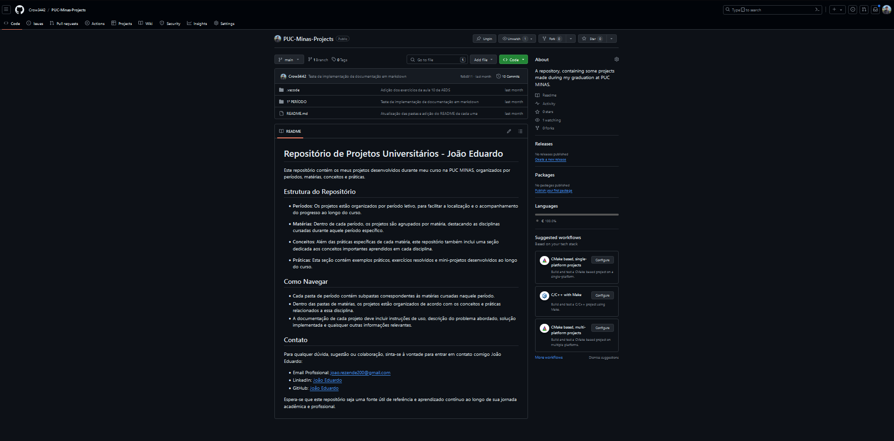
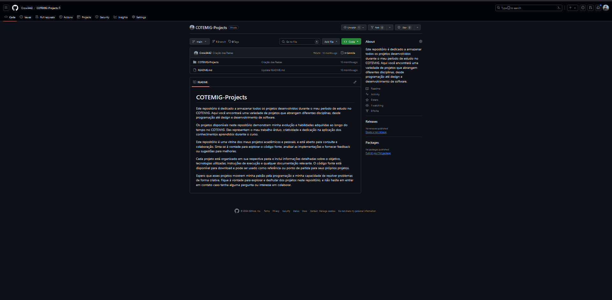
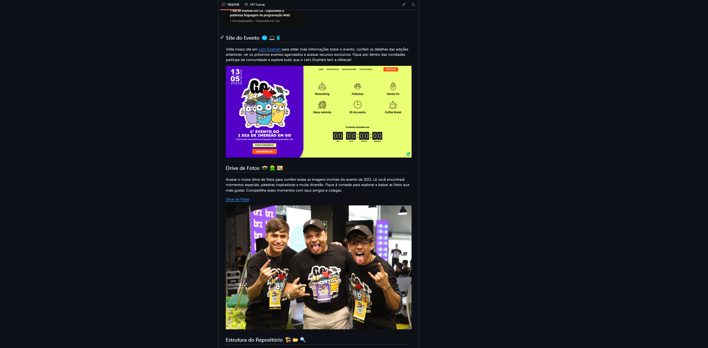

Perfil
João Eduardo Soares
Sou um programador apaixonado por criar soluções inovadoras. Além disso, sou um entusiasta da escrita, cinema, jogos e livros, encontrando inspiração nessas formas de arte. A música é minha trilha sonora constante enquanto projeto e codifico. Como amante do design, busco a harmonia visual em cada projeto. Atualmente, estou mergulhado na escrita do meu livro, 'Segredos em Cena', onde compartilho uma história cativante de investigação policial e romance. Combino minha criatividade e habilidades técnicas para trazer experiências únicas para cada projeto que abraço.
Nascido em: Belo Horizonte - MG, Brasil
Moro em: Belo Horizonte - MG, Brasil
Github: Meu GitHub


Repositórios
PUC-Minas-Projects
Descrição do Repositório 1...
 Número de estrelas
Número de estrelas
 Número de pessoas
Número de pessoas
COTEMIG-Projects
Descrição do Repositório 2...
Número de estrelas
Número de pessoas
Letsgophers.eventos
Este repositório contém os documentos relacionados ao Evento de Programação GO. O evento é voltado para programadores interessados em aprender mais sobre a linguagem de programação GO, suas aplicações e boas práticas.
Número de estrelas
Número de pessoas
Quick

Descrição do Repositório 4...
Número de estrelas
Número de pessoas